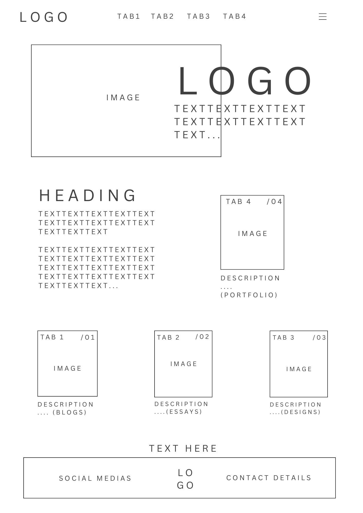

Week 4 Blog Post
The Interaction Design Process & Wireframe Evolution
IxD Process: Discovering user needs & analyzing them
I want my users to be immersed in a world of creativity that is reminiscent of a child's imagination. My target audience is parents of young children in kindergarten and primary school. My target audience is also those who are working in educational institutions that would like to utilize my skills in developing sites or designing products for children. There are tons of factors that could immerse a user but in my experience, the gamilification of elements is the most immersive. I would like to add this element in to make learning about me fun. This scale also makes note of what are most to least immersive which I anticipate incorporating:
https://blog.discoveryeducation.com/five-guiding-principles-of-successful-immersive-learning/
Apart from that, adding bright colors and dynamic elements like animation can be entertaining but also utilized as a way to guide the user around the website. I found this small but great guideline to how different age groups react to content on a screen:
https://www.zionandzion.com/ux-factors-when-designing-for-children/
Designing a potential solution
Here are a couple of solutions that might make my website fun:
Design 1:

This design mimics the formatting of a storybook where the pretty borders are like the borders from fantasy books. Similarly to the structure of a story, the first piece of text is supposed to read like a narrative hook. Following down, the user will learn more about me which leads them to my portfolio. This is then closed off with the same border from the top to mark the end of my "story". This not only gets users to interactive with me but also instantiates that personal relationship with a user. It also makes reference to what I would like to major in. I also aim for it to be written using simple terminology that not only draws in attention from children but also to immerse an adult in the world of children's literature. After that, 3 links will present itself to each my blogs, essays and designs, each represented with an image. Just as any children's book, images play a big role in helping a person visualise a scene. I want the user to be able to put information to an image to build a better understanding to who I am. The footer will consist of my socials and contact details.
Design 2:

This design prioritises information being separated from each other with the use of spacing and colours. Id imagine that this would make following the information on the page more simpler since everything is aligned with one another. This design doesn't prioritize my major within the structural elements but rather keeps the website simple for an easier read. This design might be a quick and easy read for an adult however I don't think it is creative enough to keep a child as engaged and inspired. A probable fix to this might be adding animation on place of images or elements around the page that make use of mouse scrolling.
Design 3:
This design is a lot more free range. This structure mimics the idea of floating bubbles of ideas. The ambiguously placed white space allows for free thought and imagination. Since there is a lot of white space around, I think adding animations in place will make the website feel more dynamic.
Reflection:
The main thing that I found myself struggling with was coding the navigation bar but other than that, everything else was okay. Moving forward, I need to set out and map my structure out better. I realized that I get quickly confused whenever I have to nest code. Even if its drawing or writing it out, it would definitely make a difference. What I'm most happy about is that I found myself enjoying creating the wireframes and thinking about how to align it to a user demographic.